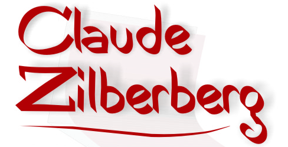

a n i v e r s á r i o
J’ai souvent insisté sur l’importance du tempo, qui est bien plus qu’un complément circonstanciel de manière. Si la vie m’a appris quelque chose, c’est la lenteur extrême du cheminement de nos pensées. Il faut bien du temps pour se comprendre soi-même et pour se faire comprendre.
Insisti muitas vezes sobre a importância do andamento, que é bem mais do que um adjunto adverbial de modo. Se a vida me ensinou alguma coisa, foi a lentidão extrema da evolução dos nossos pensamentos. É preciso muito tempo para se compreender a si mesmo e para se fazer compreender.

Feliz aniversário! Joyeux anniversaire!